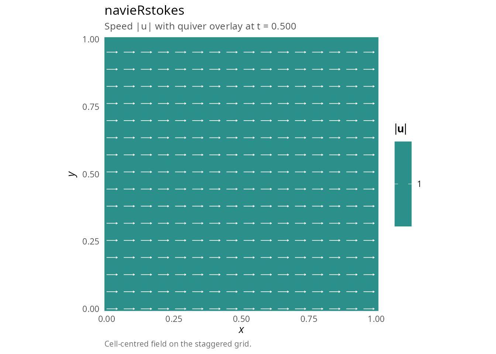
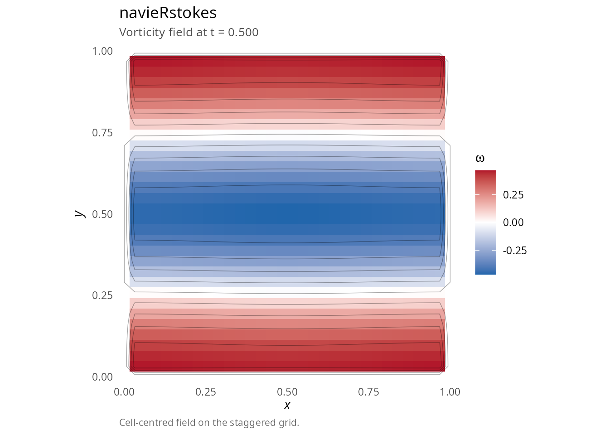
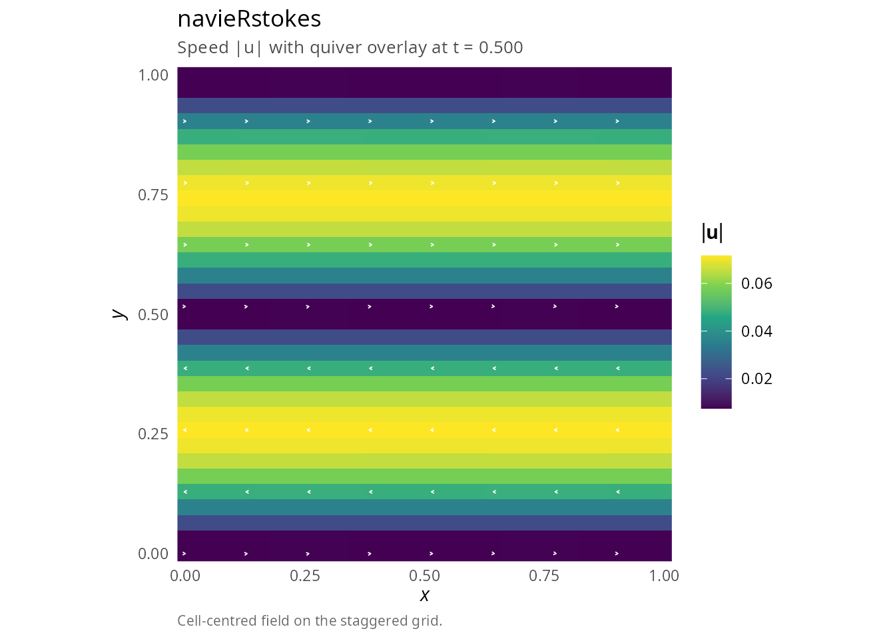
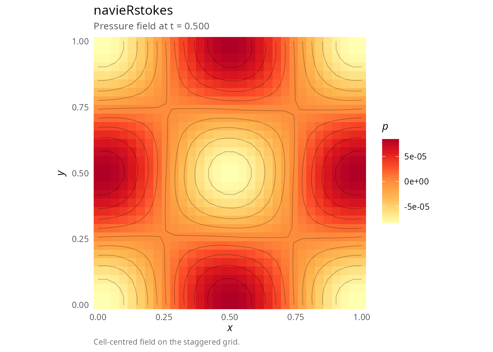
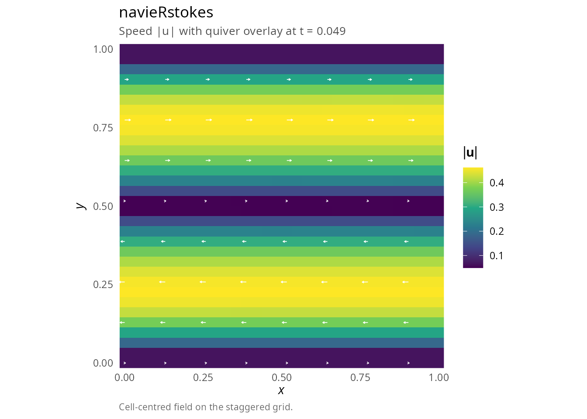
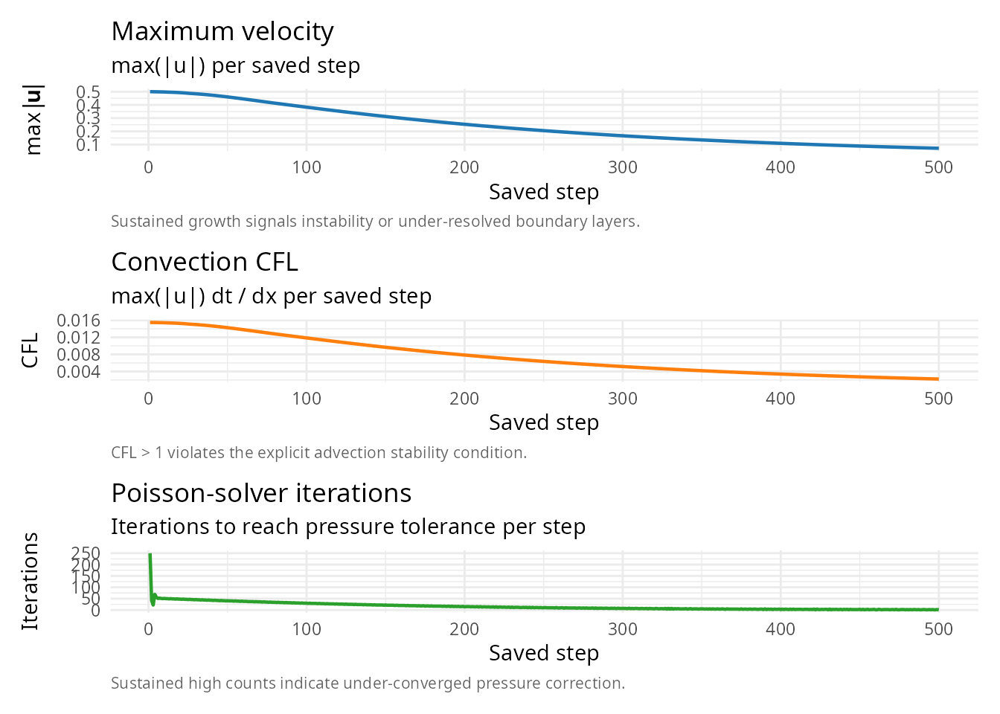
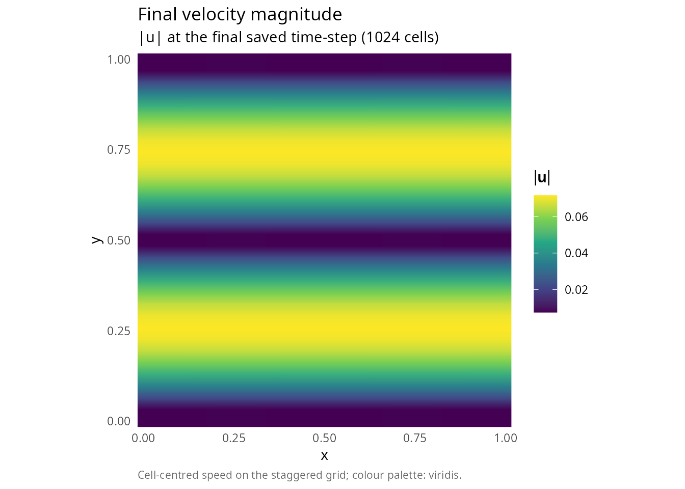

Getting started with navieRstokes
Pablo Almaraz, RElab
2026-04-27
Source:vignettes/introduction.Rmd
introduction.RmdOverview
The navieRstokes package provides a comprehensive finite
difference solver for the 2D incompressible Navier-Stokes equations
using Chorin’s fractional-step projection method. The package is
optimized with Rcpp for efficient computation and includes S3 methods
for easy visualization.
Installation
# Install from local source
# install.packages("navieRstokes", repos = NULL, type = "source")
# Load the package
library(navieRstokes)Quick start
Basic simulation with uniform flow
library(navieRstokes)
# Run simulation
result <- simulate_navier_stokes(
nx = 64, ny = 64, # Grid resolution
lx = 1.0, ly = 1.0, # Domain size
dt = 0.001, nt = 500, # Time stepping
nu = 0.01, # Kinematic viscosity
initial_condition = function(x, y) list(u = 1.0, v = 0.0), # Uniform flow
boundary_condition = list(type = "periodic")
)
#> ¡ Starting Navier-Stokes simulation
#> Grid: 64 x 64, Reynolds number (approx): 100.00
#> Step 100/500 | Mass error: 0.00e+00 | CFL: 0.06 | Pressure iter: 1
#> Step 200/500 | Mass error: 0.00e+00 | CFL: 0.06 | Pressure iter: 1
#> Step 300/500 | Mass error: 0.00e+00 | CFL: 0.06 | Pressure iter: 1
#> Step 400/500 | Mass error: 0.00e+00 | CFL: 0.06 | Pressure iter: 1
#> Step 500/500 | Mass error: 0.00e+00 | CFL: 0.06 | Pressure iter: 1
#> ✔ Simulation completed successfully
# Inspect the navieRstokes S3 object: one-screen summary, then full diagnostics
print(result)
#>
#> Navier-Stokes Simulation Result
#> ================================
#>
#> Grid: 64 x 64 (4,096 cells)
#> Domain: [0, 1.00] x [0, 1.00]
#> Resolution: dx = 0.0159, dy = 0.0159
#>
#> Viscosity: nu = 0.01
#> Reynolds: Re = 100.0 (assuming U = 1)
#> Density: rho = 1.00
#>
#> Time: t = [0, 0.5000] (500 steps, dt = 0.001)
#> Saved: 501 frames
#>
#> Diagnostics:
#> Mean mass error: 0.00e+00
#> Max mass error: 0.00e+00
#> Max CFL number: 0.063
summary(result)
#>
#> Navier-Stokes Simulation Summary
#> =================================
#>
#> GRID CONFIGURATION
#> ------------------
#> Grid size: 64 x 64 (4,096 cells)
#> Domain: [0, 1.00] x [0, 1.00]
#> Resolution: dx = 0.0159, dy = 0.0159
#>
#> PHYSICAL PARAMETERS
#> -------------------
#> Kinematic viscosity: nu = 0.01
#> Reynolds number: Re = 100.0 (assuming U = 1)
#> Fluid density: rho = 1.00
#>
#> TIME INTEGRATION
#> ----------------
#> Time step: dt = 0.001
#> Total steps: 500
#> Time range: [0.0000, 0.5000]
#> Saved frames: 501
#>
#> VELOCITY FIELD (final state)
#> ----------------------------
#> Maximum speed: 1.0000
#> Mean speed: 1.0000
#> Max |u|: 1.0000
#> Max |v|: 0.0000
#>
#> MASS CONSERVATION
#> -----------------
#> Mean divergence error: 0.00e+00
#> Max divergence error: 0.00e+00
#> Status: Excellent mass conservation
#>
#> PRESSURE SOLVER CONVERGENCE
#> ---------------------------
#> Mean iterations: 1.0
#> Min iterations: 1
#> Max iterations: 1
#>
#> CFL STABILITY
#> -------------
#> Mean CFL: 0.063
#> Max CFL: 0.063
#> CFL violations: 0 steps (CFL > 1)
#> Status: Very stable (CFL < 0.5)
# Visualize using S3 plot method
plot(result, plot_type = "velocity")
# All values should be equal!Note: A zero initial velocity field will remain at rest unless external forcing is applied. For lid-driven cavity, boundary conditions at the moving lid provide the forcing.
The Navier-Stokes equations
The incompressible Navier-Stokes equations describe the motion of viscous, incompressible fluids:
\[ \frac{\partial \mathbf{u}}{\partial t} + (\mathbf{u} \cdot \nabla)\mathbf{u} = -\frac{1}{\rho}\nabla p + \nu \nabla^2 \mathbf{u} + \mathbf{f} \]
\[ \nabla \cdot \mathbf{u} = 0 \]
where: - \(\mathbf{u} = (u, v)\) is the velocity field - \(p\) is the pressure - \(\rho\) is the fluid density - \(\nu\) is the kinematic viscosity - \(\mathbf{f}\) is external forcing
Numerical method
The solver implements Chorin’s projection method [1], which splits each time step into three substeps:
Advection-diffusion step (without pressure): \[\mathbf{u}^* = \mathbf{u}^n + \Delta t \left[-(\mathbf{u}^n \cdot \nabla)\mathbf{u}^n + \nu \nabla^2 \mathbf{u}^n + \mathbf{f}\right]\]
Pressure Poisson equation: \[\nabla^2 p^{n+1} = \frac{\rho}{\Delta t} \nabla \cdot \mathbf{u}^*\]
Velocity correction (projection): \[\mathbf{u}^{n+1} = \mathbf{u}^* - \frac{\Delta t}{\rho}\nabla p^{n+1}\]
This ensures \(\nabla \cdot \mathbf{u}^{n+1} = 0\) (incompressibility).
Spatial discretization
- Diffusion: Second-order central differences (\(O(\Delta x^2)\))
- Gradient/divergence: Second-order central differences (\(O(\Delta x^2)\))
- Convection: First-order upwind scheme (\(O(\Delta x)\))
Temporal discretization
- Time integration: First-order explicit Euler (\(O(\Delta t)\))
Overall accuracy: \(O(\Delta x) + O(\Delta t)\) (first-order in both space and time).
The upwind scheme for convection introduces numerical diffusion of order \(\nu_{num} \approx |\mathbf{u}| \Delta x / 2\), which stabilizes the scheme but reduces effective resolution at high Reynolds numbers.
Initial conditions
The package provides several divergence-free initial condition functions:
Uniform flow
result <- simulate_navier_stokes(
nx = 64, ny = 64, lx = 1.0, ly = 1.0,
dt = 0.001, nt = 500, nu = 0.01,
initial_condition = function(x, y) list(u = 1.0, v = 0.0),
boundary_condition = list(type = "periodic")
)
#> ¡ Starting Navier-Stokes simulation
#> Grid: 64 x 64, Reynolds number (approx): 100.00
#> Step 100/500 | Mass error: 0.00e+00 | CFL: 0.06 | Pressure iter: 1
#> Step 200/500 | Mass error: 0.00e+00 | CFL: 0.06 | Pressure iter: 1
#> Step 300/500 | Mass error: 0.00e+00 | CFL: 0.06 | Pressure iter: 1
#> Step 400/500 | Mass error: 0.00e+00 | CFL: 0.06 | Pressure iter: 1
#> Step 500/500 | Mass error: 0.00e+00 | CFL: 0.06 | Pressure iter: 1
#> ✔ Simulation completed successfullyTaylor-Green vortex
result <- simulate_navier_stokes(
nx = 32, ny = 32, lx = 1.0, ly = 1.0,
dt = 0.001, nt = 500, nu = 0.1,
initial_condition = function(x, y) vortex_ic(x, y, A = 0.01), # Small amplitude
boundary_condition = list(type = "periodic")
)
#> ¡ Starting Navier-Stokes simulation
#> Grid: 32 x 32, Reynolds number (approx): 10.00
#> Step 100/500 | Mass error: 5.65e-07 | CFL: 0.00 | Pressure iter: 1
#> Step 200/500 | Mass error: 1.67e-07 | CFL: 0.00 | Pressure iter: 1
#> Step 300/500 | Mass error: 3.28e-08 | CFL: 0.00 | Pressure iter: 1
#> Step 400/500 | Mass error: 5.12e-08 | CFL: 0.00 | Pressure iter: 1
#> Step 500/500 | Mass error: 1.95e-08 | CFL: 0.00 | Pressure iter: 1
#> ✔ Simulation completed successfullyShear layer
result <- simulate_navier_stokes(
nx = 32, ny = 32, lx = 1.0, ly = 1.0,
dt = 0.001, nt = 500, nu = 0.1,
initial_condition = function(x, y) {
shear_layer_ic(x, y, U0 = 0.5, delta = 0.1, epsilon = 0.01)
},
boundary_condition = list(type = "periodic")
)
#> ¡ Starting Navier-Stokes simulation
#> Grid: 32 x 32, Reynolds number (approx): 10.00
#> Step 100/500 | Mass error: 1.19e-06 | CFL: 0.01 | Pressure iter: 30
#> Step 200/500 | Mass error: 6.80e-07 | CFL: 0.01 | Pressure iter: 14
#> Step 300/500 | Mass error: 7.97e-07 | CFL: 0.01 | Pressure iter: 7
#> Step 400/500 | Mass error: 9.06e-07 | CFL: 0.00 | Pressure iter: 2
#> Step 500/500 | Mass error: 9.58e-07 | CFL: 0.00 | Pressure iter: 1
#> ✔ Simulation completed successfullyBoundary conditions
The package supports three types of boundary conditions:
Periodic boundaries
Most stable, recommended for vortex and wave simulations:
boundary_condition <- list(type = "periodic")Stability and CFL conditions
For numerical stability, you must satisfy the CFL conditions [2]:
Safe parameter choices
- High viscosity (nu = 0.1): Very stable, dt = 0.01
- Moderate viscosity (nu = 0.01): dt = 0.001
- Low viscosity (nu < 0.01): dt < 0.0001, expert use only
Example for nx = 64, lx = 1.0, nu = 0.01: - dx = 1/64 ≈ 0.016 - Diffusion CFL: dt < 0.016²/(4×0.01) ≈ 0.0064 - Safe choice: dt = 0.001 (factor of 6 below limit)
Visualization
The package provides S3 methods for easy visualization:
Static plots
# Default plot (all fields)
plot(result)
#> Warning: The following aesthetics were dropped during statistical transformation: fill.
#> ℹ This can happen when ggplot fails to infer the correct grouping structure in
#> the data.
#> ℹ Did you forget to specify a `group` aesthetic or to convert a numerical
#> variable into a factor?
# Specific field
plot(result, plot_type = "velocity")
plot(result, plot_type = "vorticity")
#> Warning: The following aesthetics were dropped during statistical transformation: fill.
#> ℹ This can happen when ggplot fails to infer the correct grouping structure in
#> the data.
#> ℹ Did you forget to specify a `group` aesthetic or to convert a numerical
#> variable into a factor?
plot(result, plot_type = "pressure")
#> Warning: The following aesthetics were dropped during statistical transformation: fill.
#> ℹ This can happen when ggplot fails to infer the correct grouping structure in
#> the data.
#> ℹ Did you forget to specify a `group` aesthetic or to convert a numerical
#> variable into a factor?
# Specific time step
plot(result, time_index = 50, plot_type = "velocity")
Animations
Requires the av (for MP4) or gifski (for
GIF) packages:
# Create MP4 animation
# flow(result, output_file = "simulation.mp4", fps = 20)
# Create GIF animation
# flow(result, output_file = "simulation.gif", format = "gif", fps = 10)
# Custom animation
# flow(result,
# time_seq = seq(1, 500, by = 5), # Every 5th frame
# output_file = "custom.mp4",
# fps = 30,
# plot_type = "vorticity")Diagnostics
The simulation returns comprehensive diagnostics:
library(ggplot2)
library(patchwork)
# Mass conservation error
result$diagnostics$mean_mass_error
#> [1] 3.949616e-06
result$diagnostics$max_mass_error
#> [1] 0.0002088286
df_d <- data.frame(
step = seq_along(result$diagnostics$max_velocity),
Umax = result$diagnostics$max_velocity,
cfl = result$diagnostics$cfl_convection,
iter = result$diagnostics$pressure_iterations
)
p_U <- ggplot(df_d, aes(step, Umax)) + geom_line(linewidth = 0.8, colour = "#1F77B4") +
labs(title = "Maximum velocity",
subtitle = "max(|u|) per saved step",
caption = "Sustained growth signals instability or under-resolved boundary layers.",
x = "Saved step", y = expression(max(group("|", bold(u), "|")))) +
theme_minimal(11) +
theme(plot.caption = element_text(color = "grey40", size = 8, hjust = 0))
p_C <- ggplot(df_d, aes(step, cfl)) + geom_line(linewidth = 0.8, colour = "#FF7F0E") +
labs(title = "Convection CFL",
subtitle = "max(|u|) dt / dx per saved step",
caption = "CFL > 1 violates the explicit advection stability condition.",
x = "Saved step", y = "CFL") +
theme_minimal(11) +
theme(plot.caption = element_text(color = "grey40", size = 8, hjust = 0))
p_I <- ggplot(df_d, aes(step, iter)) + geom_line(linewidth = 0.8, colour = "#2CA02C") +
labs(title = "Poisson-solver iterations",
subtitle = "Iterations to reach pressure tolerance per step",
caption = "Sustained high counts indicate under-converged pressure correction.",
x = "Saved step", y = "Iterations") +
theme_minimal(11) +
theme(plot.caption = element_text(color = "grey40", size = 8, hjust = 0))
p_U / p_C / p_I
Important guidelines
DO
- Use divergence-free initial conditions (package ICs are designed for this)
- Use small amplitudes for vortices (A <= 0.1) to start
- Use high viscosity when testing (nu = 0.1)
- Use small time steps relative to CFL limit (factor of 5-10 below)
- Prefer periodic boundaries for vortex flows (most stable)
- Monitor diagnostics (CFL, mass error)
Example workflow
library(navieRstokes)
# 1. Run simulation
result <- simulate_navier_stokes(
nx = 32, ny = 32, lx = 1.0, ly = 1.0,
dt = 0.001, nt = 500, nu = 0.1,
initial_condition = function(x, y) {
shear_layer_ic(x, y, U0 = 0.5, delta = 0.1, epsilon = 0.01)
},
boundary_condition = list(type = "periodic")
)
#> ¡ Starting Navier-Stokes simulation
#> Grid: 32 x 32, Reynolds number (approx): 10.00
#> Step 100/500 | Mass error: 1.19e-06 | CFL: 0.01 | Pressure iter: 30
#> Step 200/500 | Mass error: 6.80e-07 | CFL: 0.01 | Pressure iter: 14
#> Step 300/500 | Mass error: 7.97e-07 | CFL: 0.01 | Pressure iter: 7
#> Step 400/500 | Mass error: 9.06e-07 | CFL: 0.00 | Pressure iter: 2
#> Step 500/500 | Mass error: 9.58e-07 | CFL: 0.00 | Pressure iter: 1
#> ✔ Simulation completed successfully
# 2. Check diagnostics
cat("Mean mass error:", result$diagnostics$mean_mass_error, "\n")
#> Mean mass error: 3.949616e-06
cat("Max CFL:", result$diagnostics$max_cfl, "\n")
#> Max CFL: 0.01549903
# 3. Visualize
plot(result, plot_type = "velocity")
plot(result, plot_type = "vorticity")
#> Warning: The following aesthetics were dropped during statistical transformation: fill.
#> ℹ This can happen when ggplot fails to infer the correct grouping structure in
#> the data.
#> ℹ Did you forget to specify a `group` aesthetic or to convert a numerical
#> variable into a factor?
# 4. Create animation
# flow(result, output_file = "my_simulation.mp4", fps = 20)
# 5. Extract data for analysis
u_final <- result$u[, , dim(result$u)[3]]
v_final <- result$v[, , dim(result$v)[3]]
speed <- sqrt(u_final^2 + v_final^2)
# Plot speed profile
df_sp <- data.frame(
x = rep(result$x, length(result$y)),
y = rep(result$y, each = length(result$x)),
speed = as.vector(speed)
)
ggplot(df_sp, aes(x = x, y = y, fill = speed)) +
geom_raster(interpolate = TRUE) +
scale_fill_viridis_c(option = "viridis", name = expression(group("|", bold(u), "|"))) +
coord_fixed(expand = FALSE) +
labs(title = "Final velocity magnitude",
subtitle = sprintf("|u| at the final saved time-step (%d cells)", length(speed)),
caption = "Cell-centred speed on the staggered grid; colour palette: viridis.",
x = "x", y = "y") +
theme_minimal(11) +
theme(plot.caption = element_text(color = "grey40", size = 8, hjust = 0),
panel.grid = element_blank())
Performance
The package uses C++/Rcpp for computational kernels with OpenMP parallelization, providing significant speedups compared to pure R implementations.
C++/OpenMP parallelization
Version 0.2.0 introduces OpenMP support for parallel computation on multi-core systems. All major computational kernels are parallelized using OpenMP directives:
| Kernel | Operation | Parallelization |
|---|---|---|
solve_poisson_jacobi_cpp() |
Jacobi iterations | #pragma omp parallel for collapse(2) |
compute_convection_cpp() |
Upwind scheme | #pragma omp parallel for collapse(2) |
compute_diffusion_cpp() |
Laplacian | #pragma omp parallel for collapse(2) |
compute_divergence_cpp() |
Divergence | #pragma omp parallel for collapse(2) |
compute_gradient_cpp() |
Gradient | #pragma omp parallel for collapse(2) |
compute_vorticity_cpp() |
Vorticity | #pragma omp parallel for collapse(2) |
Conditional parallelization
OpenMP introduces thread management overhead that can exceed computational benefits for small problems. The package implements intelligent threshold-based activation:
// OpenMP threshold: only parallelize for large grids
const bool use_omp = (nx * ny >= 128 * 128); // 16,384 cells
#ifdef _OPENMP
#pragma omp parallel for collapse(2) if(use_omp)
#endif
for (int i = 1; i < nx - 1; i++) {
for (int j = 1; j < ny - 1; j++) {
// ... computation ...
}
}Threshold rationale: Empirical testing shows that
for grids smaller than 128×128, OpenMP overhead (thread creation,
synchronization, cache effects) exceeds the benefit of parallel
execution. The conditional if(use_omp) clause ensures
optimal performance across all grid sizes.
Performance benchmarks
| Grid size | Cells | Time (1000 steps) | Parallelization |
|---|---|---|---|
| 32×32 | 1,024 | ~0.1s | Serial |
| 64×64 | 4,096 | ~0.4-0.7s | Serial |
| 128×128 | 16,384 | ~2.5s | OpenMP active |
| 256×256 | 65,536 | ~30s | OpenMP active |
When OpenMP provides maximum benefit
OpenMP parallelization is most effective when:
- Large grids: 256×256 or larger, where computational work dominates overhead
- Many Poisson iterations: Ill-conditioned problems requiring 100+ iterations
- Multi-core systems: 4+ physical cores for effective workload distribution
OpenMP provides minimal benefit when:
- Small grids: Below the 128×128 threshold (serial execution used)
- Fast Poisson convergence: Well-conditioned problems converging in 1-4 iterations
- Memory-bound operations: Boundary condition enforcement is I/O bound
System requirements
OpenMP is optional. The package compiles and runs correctly without OpenMP support:
- Linux: GCC 4.2+ includes OpenMP support
-
macOS: Install
libompvia Homebrew (brew install libomp) - Windows: Rtools includes OpenMP support by default
To verify OpenMP is active, check for the _OPENMP macro
during compilation. The package falls back gracefully to serial
execution if OpenMP is unavailable.
Further reading
-
Lid-driven cavity: see
vignette("lid-driven-cavity") -
Vortex decay: see
vignette("vortex-decay") -
Advanced examples: see
vignette("advanced-examples") -
Theory: see
vignette("navier-stokes-theory") -
History: see
vignette("navier-stokes-history") -
API reference: see
vignette("api")
References
[1] Chorin, A. J. (1968). Numerical solution of the Navier-Stokes equations. Mathematics of Computation, 22(104), 745-762. DOI: 10.1090/S0025-5718-1968-0242392-2
[2] Griebel, M., Dornseifer, T., & Neunhoeffer, T. (1998). Numerical simulation in fluid dynamics: A practical introduction. SIAM. ISBN: 978-0-89871-398-5. DOI: 10.1137/1.9780898719703
[3] Pope, S. B. (2000). Turbulent flows. Cambridge University Press. ISBN: 978-0-521-59886-6. DOI: 10.1017/CBO9780511840531
[4] OpenMP Architecture Review Board (2021). OpenMP Application Programming Interface, Version 5.2. https://www.openmp.org/specifications/
[5] Eddelbuettel, D. & François, R. (2011). Rcpp: Seamless R and C++ integration. Journal of Statistical Software, 40(8), 1-18. DOI: 10.18637/jss.v040.i08